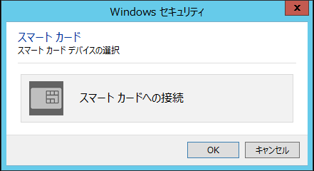
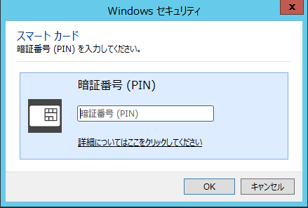
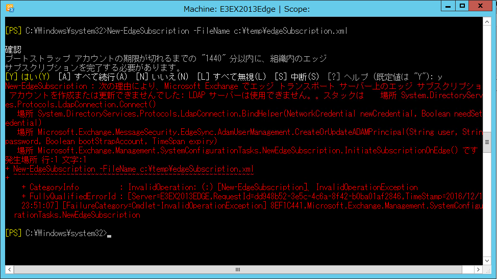

今回は、Exchange 2013/2016 のエッジ トランスポート サーバーをご利用でコマンドレット実行時にスマート カード認証を求められる場合の回避策についてご紹介します。
事象概要
証明書の更新などに伴いエッジ サブスクリプションの再構成を行う際、Exchange エッジ トランスポート サーバー上で New-EdgeSubscription コマンドレットや Remove-EdgeSubscription コマンドレットを実行すると、スマート カードでの認証が求められる場合があります。
表示される画面には、以下の 2 つのパターンがあります。


Exchange エッジ トランスポート サーバーにおいて Exchange Management Shell から New-EdgeSubscription コマンドレットや Remove-EdgeSubscription コマンドレットを実行する際、認証を伴った LDAP Bind を試みますが、この認証時に環境によってはスマート カードでの認証が求められます。
そもそもスマート カード認証が設定されていない等で認証が通らない、またはスマート カード認証のダイアログをキャンセルすると、コマンドレットは実行されず以下のようにエラーになります。

対処策
この状況はローカル ログオン アカウントに紐づけられた認証情報により発生するため、回避するためには、以下 2 つの方法があります。
- 当該 Exchange エッジ トランスポート サーバーに別の管理者アカウントを作成し、新しいユーザーでコマンドレットを実行する。
- システム アカウントを使用してコマンドレットを実行する。
システム アカウントを使用する場合には、以下の手順をご参照ください。
手順
以下の URL にアクセスし、ツールをダウンロードします。
Title: PsExec
Url: https://technet.microsoft.com/ja-jp/sysinternals/bb897553ダウンロードした zip ファイルを展開し、PsExec.exe をエッジ トランスポート サーバー上にコピーします。
コマンド プロンプトまたは Windows PowerShell を起動して PsExec.exe をコピーしたディレクトリへ移動し、以下のコマンドを実行します。
コマンド:
1
PsExec.exe -s -i C:\Windows\System32\WindowsPowerShell\v1.0\powershell.exe -PSConsoleFile "C:\Program Files\Microsoft\Exchange Server\V15\bin\exshell.psc1" -noexit -command ". 'C:\Program Files\Microsoft\Exchange Server\V15\bin\Exchange.ps1'"
※ 上記は Exchange サーバーのインストール パスが既定のパスであることが前提の手順となっております。インストール パスが異なる場合には、適宜変更頂けますようお願い申し上げます。
手順 3 のコマンドにより起動し、Exchange に接続した PowerShell にて、実施したいコマンドレットを実行します。以下では、New-EdgeSubscription コマンドレットを実施する場合の例を記載します。
1
New-EdgeSubscription -FileName <xml ファイル名>
補足情報
この事象は Exchange エッジ トランスポート サーバーでのコマンドレット実行時に限らず、Windows PowerShell から LDAP 接続を試みた際にも発生する可能性があります。
Windows PowerShell にてサンプル スクリプトを実行することで、起き得る環境か否かを確認することができます。
サンプル スクリプト
1 | Add-Type -AssemblyName:System.DirectoryServices.Protocols |
※ 本情報の内容（添付文書、リンク先などを含む）は、作成日時点でのものであり、予告なく変更される場合があります。